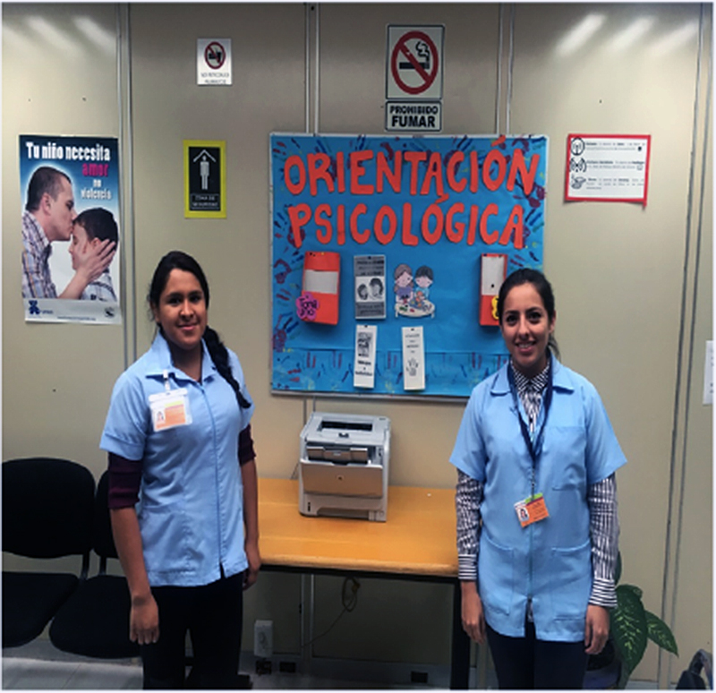

El Servicio de Psicología de los CENDI y Jardín de Niños tiene como principal objetivo cuidar y propiciar el desarrollo integral y equilibrio emocional de los niños y niñas, a través de acciones psicológicas programadas para favorecer las adquisiciones cognitivas y motrices. Este servicio de Psicología se brinda con la finalidad de preservar el equilibrio emocional de los niños en un horario de 8:00 a 16:00 horas. Ofrece atención inicial, asesoría a padres y personal docente y realiza las pruebas necesarias para el diagnóstico y referencia de casos especiales. Participa activamente en el programa de educación a padres en coordinación con el área de Trabajo Social.
